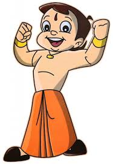
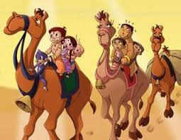
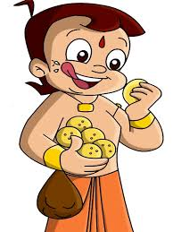

Bheem: Bheem is an adventurous and fun-loving nine-year-old who is gifted with extraordinary strength. This power is a boon for Dholakpur,
Bheem's village, which is constantly beset by all kinds of perils. This child has a big heart and he always uses his strength to help those who are wronged or needy.
He is the favourite of the King, won many contests like the "Champion of Champions" contest,
has been honoured with the "Best Person Award" (noticed in the episode "Bahurupiya Bheem") and nabbed culprits,
robbers and is seen a Guardian of the Innocence persons, Animals persons & Poor persons. He wants to be a protector
of the world.

His best friend is Raju, Jaggu and Chuki and as seen in recent
episodes it is clear that she is his sweet heart and girl friend!

Bheem loves food and has a certain craving for laddoos, which in fact, give him a surge of energy and make him even stronger than he is.
These laddoos are often offered by Chutki!!!
-BY HARSH AND CHIRALI